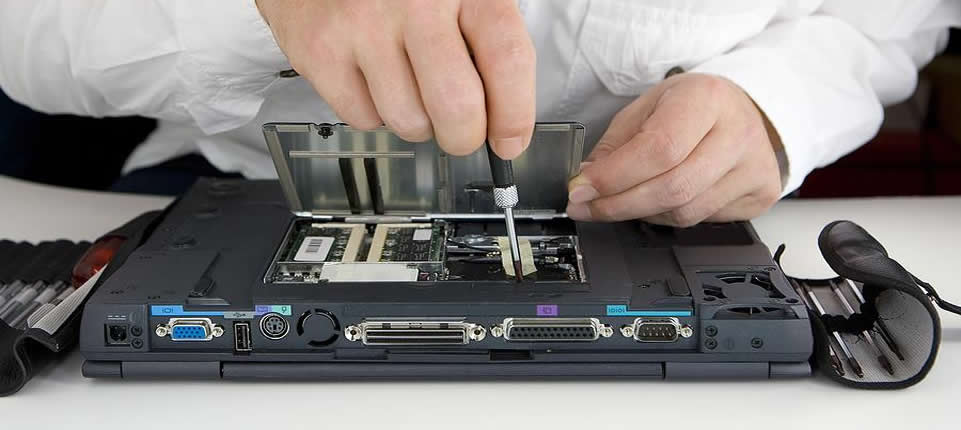
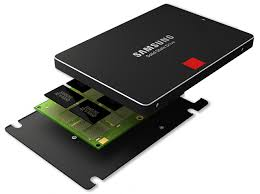
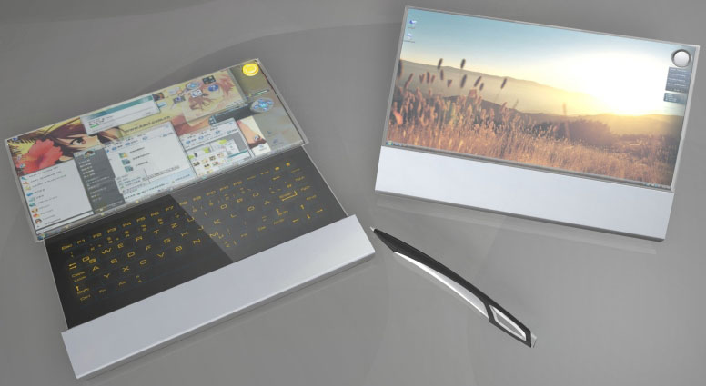

Ноутбуки
Ремонт ноутбуков
 Сервисный центр осуществляет модернизацию и ремонт ноутбуков Acer, Asus, Toshiba, Sony, Samsung, Dell, HP, LG, IBM, Compaq, Fujitsu-Siemens и других.
Ремонт ноутбуков производится в современных ремонтных лабораториях с использованием новейших методик ремонта. После ремонтных работ выполняется тестирование ноутбуков. Только после этого ремонт ноутбуков считается завершенным. Наши инженеры имеют высокую квалификацию и большой опыт работы, что позволяет производить качественный ремонт ноутбуков любой степени сложности.
Подключение SSD диска
 Устанавливаются SSD диск как для ноутбука, так и для обычного ПК, в качестве основных жестких дисков (если имеют значительный объем) или как вспомогательные накопители, рассчитанные только на установку операционной системы с применением интерфейса SATA. В случае их использования компьютер начинает работать значительно быстрее, так как обмен данными проходит без задержек, свойственных HDD. Среди новых компьютерных комплектующих выделяются своей производительностью твердотельные накопители, которые обозначаются аббревиатурой "SSD". Они постепенно начинают вытеснять привычные нам HDD. Данный вид накопителей работает по принципу флеш-памяти, не имеет трущихся и крутящихся деталей, характеризуется бесшумностью.
Необычные формы ноутбуков
 Стандартный ноутбук, если отбросить периферийные устройства, состоит всего из двух частей: это экран, соединенный с клавиатурой подвижным механизмом по линии стыка между ними. То есть обыкновенный и ничем непримечательный «книжный» формат. Все гениальное просто – такая компоновка эргономична и комфортна в использовании. Однако большинство конструкторов привыкли мыслить неординарно и зачастую создают действительно уникальные вещи. За последние 25 лет, после того как ноутбуки начали широко применяться по всему миру, патентные бюро накопили много уникальных, а нередко и забавных проектов переносных ПК. Сложно представить, какое количество устройств вышло из строя за всё это время, и, насколько часто необходимо было выполнить быстрый и качественный ремонт ноутбуков.
Советы по экплуатации ноутбука
Кроме соблюдения чистоты и температурного режима нужно знать о том, что нанести вред вашему ноутбуку может вибрация. Любые удары по нему, а тем более падение наносят непоправимый вред. Прежде всего жёсткому диску, на котором хранится вся ваша информация. И повредить жёсткий диск, значит потерять всю имеющуюся на нём информацию. Кроме жёсткого диска может быть причинен вред и материнской плате и системе вентиляции и дисплею, да и корпусу ноутбука. Поэтому не стоит пренебрегать такими вещами, как специальные сумки для ноутбуков.
Сохранения информации с жесткого диска
 Неудивительно, когда у некоторых активных пользователей ПК находится два, или более, винчестеров с различными интерфейсами, оставшихся еще от старых ПК. При наличии интерфейса SATA просмотреть данные на современном компьютере не составит труда. Подсоединить можно напрямую к имеющемуся ПК посредством стандартного устройства, продающегося в любом специализированном магазине. Сложности возникнут с интерфейсом IDE по той причине, что в настоящее время в компьютерах этот интерфейс уже не используется. Наш сервис поможет Вам справиться с этой проблемой, а кроме этого выполнить качественный и быстрый ремонт компьютера в Киеве.
Неудивительно, когда у некоторых активных пользователей ПК находится два, или более, винчестеров с различными интерфейсами, оставшихся еще от старых ПК. При наличии интерфейса SATA просмотреть данные на современном компьютере не составит труда. Подсоединить можно напрямую к имеющемуся ПК посредством стандартного устройства, продающегося в любом специализированном магазине. Сложности возникнут с интерфейсом IDE по той причине, что в настоящее время в компьютерах этот интерфейс уже не используется. Наш сервис поможет Вам справиться с этой проблемой, а кроме этого выполнить качественный и быстрый ремонт компьютера в Киеве.